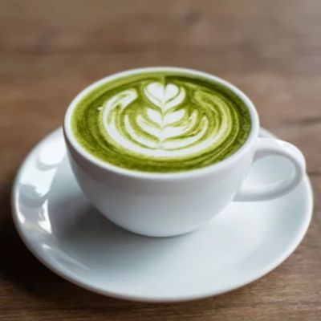

Winter Hot Treats
Grinch's Matcha

Key Ingredients
- 💚 Matcha powder (1 tsp)
- 🔵 Milk (1 cup)
- 🍯 Honey or sugar (1 tsp, to taste)
- 🟤 Vanilla extract (1/4 tsp)
Equipment
- Whisk or matcha whisk
- Saucepan
Quick Guide
- In a small bowl, whisk matcha powder with 2 tbsp of warm water until smooth and lump-free.
- Heat milk gently in a saucepan over medium heat (don’t boil).
- Stir in honey (or sugar) and vanilla extract.
- Whisk the matcha mixture into the milk until fully combined and frothy.
- Serve in a mug and enjoy the Grinch’s green magic! 💚☕